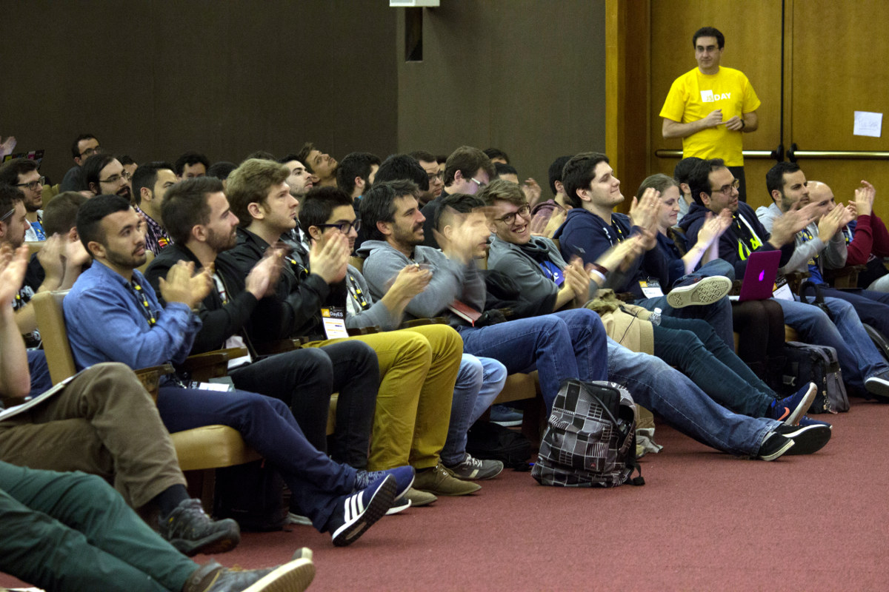

How Much Did JSDayES 2017 Cost?
And What Else You Need To Make It Work

The Moneys
After finishing an exhausting third edition of JSDayES, and following our principle of transparency by default, it is time to publish the books so that they can be audited by you, the JavaScript community.
Hopefully this article will also inspire and help people that want to organize a technical conference.
Tickets
This last edition was a resounding success, with more than 600 attendees. Paid tickets were distributed as follows:
- 225 paid the full price of €80,
- 56 more used a 20% off discount and paid €64,
- 96 bought reduced tickets (€20/€16),
- 51 super early bird (€25),
- 100 early bird (€50).
The remaining attendees did not pay directly:
- 60 sponsor tickets,
- 34 speakers,
- 18 volunteers,
- and 4 organizers.
For a grand total of 644 attendees. A few of them only came to the workshop by @substack, so on Saturday we were just above 600 people.
Total income from tickets is €29.9k, which we will round as €30k. We used [Koliseo] as a payment platform, which was a very good choice: support was excellent, and the €1800 commission is quite low. All in all, we earned very close to €28k from tickets.
Taxes
There was a painful mixup with taxes: we sold the first tickets with 21% VAT, but later learned that non-profit conferences are VAT exempt. We changed it to 0% on the Koliseo interface, but there were already many invoices that had been generated already, and which had already been reported to the tax authority on the previous quarter.
This resulted in €5k paid on unnecessary taxes. The upside is that this money will surely be used to improve the lives of the citizenry and never squandered by dishonest politicians, so there’s that.
Sponsorships
All in all we counted with 22 sponsors, that have provided a total of €22,950 (which we will round and abbreviate as €23k).
A good number of sponsors also paid in kind. Many payed for transportation for their speakers, and Cabify provided for transportation within the city. This is an excellent formula for us, since it reduces the accounting on both parts.
The estimated combined value of these in-kind payments is €11.5k. This brings the total of revenue in this section to €34.5k.
Venue
The venue chosen by the team was the conference center Pablo VI, the same used for SpainJS ’13 (which I happened to attend). Price for 1.5 days was €10.8k, discounted from €12k (for a nominal price of €8k per day).
We also spent €1.5k in furniture for the sponsor stands and 50 additional chairs; plus €1k in roll ups, banners and giant white letters. All in all we spent €13.5k in the venue.
Speakers
We covered transport and accommodation for our speakers from outside Madrid: flights, taxis and two hotel nights. It is the least we can do for people who spend a lot of their free time crafting a presentation to share their expertise with us. And believe me, giving a talk is a lot of work.
There were six speakers coming from America (one from Canada, four from the US, another from Argentina), seven from different parts of Europe and eight from the rest of Spain. Luckily many of them were covered by their respective companies. It all came to around €5k in travels and €3k in hotel rooms.
Other assorted costs:
- The workshop by @substack cost us almost €2k. Luckily it paid for itself since it was sold separately.
- The speakers’ dinner was €2.3k.
- A small present for all speakers was €700.
All in all we spent €13k to make our speakers have a great experience.
Attendees
We also wanted to make our attendees comfortable. There were a lot of meals to provide for:
- Tea for both days was €3k.
- Breakfast on Saturday (churros) was €2k.
- Lunch on Saturday was €6.5k.
- The final party was €1k.
All amounts have been rounded to the closest half €k. All in all, catering was €12.5k.
The other cost related to attendees was lanyard and bag, which cost €2.5k together.
All in all, costs related to the audience added up to €15k, or €25 per attendees That is how much we spent on each of you directly!
Reduced tickets were priced at €20, which means they were not even paying for their direct costs. But we were happy because this probably allowed a lot of people to come to JSDayES which would otherwise not have been able to attend.
Communication
A large part of the success of a conference depends on communication: marketing, broadcasting, streaming, audio/visuals.
This year we have counted with [OK Comunicación], publishers of [Gaceta tecnológica], to help us with communication. They have published press releases, managed our interactions with sponsors and saved us a ton of work.
We released an ad on [JavaScript Daily] that cost about €400.
We spent €500 on video and streaming fees, but the biggest part was covered by Corus Consulting (the old M4V) and [TodoJS]. We also spent €400 on the photographers.
All in all communication accounted for about €4.5k.
Final Balance
So in the end we had a pretty tight budget.
| concept | income (€k) | expense (€k) |
|---|---|---|
| tickets | 28 | |
| sponsors | 23 | |
| taxes | 5 | |
| venue | 13.5 | |
| speakers | 13 | |
| attendees | 15 | |
| communication | 4.5 | |
| total | 51 | 51 |
Taking into account payments in kind and ticket commissions the total goes up to €65k, which is what you should at least budget for a conference of this size. All figures have been rounded, and in fact there is a deficit of less than €100.
How did we balance the budget so tighly? Basically through sheer luck. An effort of this magnitude has many variables, and not all of them are known until after it has ended. Our internal spreadsheet has more than 60 different concepts, and the total budget was around €65k. A difference of €1000 is less than 2% of the total. Keep in mind that many concepts are not known in advance: speaker flights, speaker dinner, number of sponsors (the last one entered in the week before the conference).
We kept the party open until the last minute so we could spend more or less money depending on how the accounting looked. Unfortunately this meant that we could not tell everyone in time, and anyway we did not have money for a larger party.
Some Notes
Beyond money, a 600+ people conference has many interesting aspects.
Talks And Speakers
We cannot be more satisfied with the talks for this year. You can see the scores given by attendees in the schedule. Average score is around 4.5, while in 2015 it was 3.5. Therefore we have improved a lot!
We opened a Call for Proposals, and it has been an essential tool for attracting speakers. We also had an advisory committee that helped us select the best talks, for the main and international tracks. But a large part of our mission is to attract new talent. So we hand-picked many of the talks that would have been discarded otherwise, mostly from speakers with less experience; and did a “Rising Stars” track with it. Was it a success? Well, here are the average scores for each track:
- Main track: 4.45.
- International track: 4.3.
- Rising stars: 4.45.
- Workshops: 4.9.
The first three tracks are again within the margin of error. There is no noticeable increase in quality between the first two (voted by the advisory committee) and rising stars (hand-picked).
The same cannot be said about the first day: average score was 3 across opening keynote, lightning talks and workshop. Not many people have spoken well about it. On the plus side it gave us ample time to organize everything and start with registration, but on the whole it was not very relevant, apparently.
Code Of Conduct
We have been notified of a couple of violations of the code of conduct, both related to a couple of speakers that made lewd comments. They were both notified, and both immediately apologized.
We are happy to report that there were no incidents reported among attendees. Next year we will have to translate the code of conduct to English!
Diversity
This year we had around 25% female speakers: 8 out of a total of 32 talks were by women, alone or in tandem. Better than last year (0 female speakers!), but still below what we would like.
These brave women were not chosen just because they were women; their talks were in general as well received as the rest. The average talk score was 4.3, slightly below the global average of 4.5 but well within the margin of error.
We have not quantified the percentage of female attendees, but it should be well above 10%.
We had a lot of foreign speakers in the international track. There were also at least two South American engineers in Spanish talks, which were well received. Next year we would also like to increase the number of talks by foreign-born engineers, also in the national tracks.
The aspect that we are most proud of is geographical diversity. Only 12 out of 32 talks (37%) were Madrid-based; another 13 (40%) were from international speakers; and the remaining 7 were from Spanish speakers coming from outside Madrid. Next year we will strive to reach out even more.
Wait, it gets better. In a quick show of hands, more than half the attendees were coming from outside Madrid. So we succeeded in making a lot of communities gather around JSDayES, strenghten our ties and learn together. This helps us dispel the culture of “doing just a big one-day meetup”.
Volunteers
We received applications from 13 volunteers; in the end only 12 were able to make it, 2/3 of which were women. They did an excellent job throughout the conference.
Corus (the old M4V) volunteers were also present in all rooms recording the audio and video.
Venue
This is perhaps the single aspect that has generated more complaints. We were well aware that the Pablo VI conference center is outdated and in need of reformation. Still, even the brand new room upstairs where the international track was held was a big disappointment, as sound was very deficient and there were very few electric plugs. WiFi was also not working well in the whole building, even though we restricted it as much as possible.
The biggest advantage of this venue was price: for less than €11k we had it for a day and a half. A good conference center in downtown Madrid is around €20k/day.
Catering
Another issue that has generated a lot of complaints was catering. Not everyone complained: apparently lunch was not all bad, but it was a bit scarce and the best courses were over quickly, leaving us with the infamous “white buns from hell”. In our defense, we used the same provider as last year, which was plentiful and very well valued by attendees.
Also, on the first day we expected 200~300 people, but almost 500 showed up! Obviously we were a bit short. The remaining meals were OK in quality and quantity as far as we know.
You may think that with a budget of around €20 per person you can do much better than we did. Think again. Providing catering for 600 people is a completely different problem than for 6, or for 60. There’s three meals a day, coffee and tea. You have to set up tables and possibly hire patio furniture. Don’t forget vegan and gluten-free options.
Organization
This was not a generalized complaint, but some commenters felt that we the organizers were overwhelmed. They don’t know half of it.
We are four organizers. Each has devoted countless hours in our spare time to organizing JSDayES. We are unpaid volunteers, and do this out of our spare time: we all have jobs, but participate here independently as individuals. The idea is that we stay close to our community roots.
Even with the help of OK Comunicación, organizing an event of this magnitude has taken a toll on us. And we have spent a lot of time on tasks that do not really provide much value, such as renting chairs or ordering Cabifys.
Community
We speak a lot about “community”. What is it exactly?
For the first year the “community” was just a gathering of communities from Madrid. In 2016 we reached around and attracted many people from all Spain. Finally, this year local attendees were less than half.
We want to help all interested JavaScript developers from Spain meet in one place, see some good talks, share a few meals and a roof for a day, and go back to our daily routine with renewed ideas. Our sore spot is Barcelona: it has a vibrant startup scene, but hardly any developers came from there this year.
This year we have tried to attract an international audience, or at least foreigners working in Madrid, without much success. Next year we will make sure that the international track provides for a consistent experience for non-Spanish speakers.
We would love to also strengthen ties with South and Central American developers, but there are practical issues: each speaker travel from across the ocean costs us more than €1k, so costs rapidly add up.
JSDayES 2018
We have considered a lot of options for the next edition of JSDayES, taking into account the feedback received.
Possible Scenarios
Below are some scenarios ordered from simplest to more complex, with pros and cons. We will also show an estimation of ticket prices.
The Grassroots Option
Some people have suggested that we go back to one day, one track, local speakers, 200 attendees, everything cheap conference.
It is easy to estimate ticket prices since we have already done something similar. A single-track, single day, 200 people event came at about €20k in 2016. Counting half of that from sponsors and half from attendees means that tickets would again cost around €50.
Pros: * Simple to organize. * Cheap tickets!
Cons: * It does not fit our stated goal of improving the national JavaScript community, as stated under diversity and community. * We would once again go back to having no international JavaScript conferences in Madrid. That sucked.
The Immobilist Option
The default option is to keep everything exactly as this year.
Again, it is easy to estimate ticket prices since they remain the same. Repeating the format of this year would cost around €65k, and counting half of that from tickets would again place them at around €80. Many people bought reduced and discounted tickets, so we can simplify and say that we sold the equivalent of 400 full price tickets. This will come handy for the remaining estimations.
Pros: * The result was not bad. * We already know how to do it.
Cons: * Does not address complaints received. * Risks burning out the current team of organizers: some of us feel that this level of involvement was not sustainable.
The Managed Option
We are also evaluating professional conference management. They will ideally take care of those aspects that are not specific to JSDayES:
- sponsors,
- catering,
- speaker accommodation and transportation,
- conference signs,
- and accounting.
For this third scenario we would have to increase the budget significantly. One and a half days at €20k/day would mean €30k for an improved venue, or €20k more, and at least €10k for professional management. All in all around €95k for the same number of attendants; counting half of it from tickets would mean €45k, or (again counting 400 full-price tickets) around €120 per ticket. We might be able to bring the price down a bit by reducing the conference to just one day, and perhaps by increasing sponsorships (but see below).
Pros: * Addresses most concerns. * It will help make JSDayES sustainable for upcoming editions.
Cons: * Management would cost at least €6k, perhaps more. * It may make the conference lose some of its community appeal.
The Professional Option
Some people have suggested that we charge for our time, and start making money out of JSDayES. This is not a bad idea, and we are not against it. Many other conferences in Spain and abroad follow this model successfully, to name a few: TarugoConf, AngularCamp, FullStack Fest.
A 100% professionalized conference would add the cost for our own time, and make some profit also. We would probably have to spend a bit more in catering; at least that is the standard in professional conferences. The standard around Europe is about €350/day, while in Spain prices are between €150 and €200 per day. Seems about fair.
Pros: * Provides an incentive to organizers. * The model is sustainable.
Cons: * We would stop publishing articles like this one. * This is probably not what we want to do with JSDayES: for us it is a work of love, not a money-maker.
Ticket Prices
The final price of tickets is a sensitive issue within the community. Many people complain about two-digit price increases in conferences; some feel that such prices will drive many people out of events.
We have run a couple of polls among the audience, just to gauge if there would be interest at this new price. Most of the responders voted for unrealistic amounts such as €50, perhaps based on the mistaken idea that we were bargaining. We are taking poll results with a grain of salt: after 2015 we run a similar poll that indicated that people would pay at most €25, and yet in 2016 we outsold our €50 tickets in a grand total time of 10 minutes.
The reality is harsh. If you want better venue, management and catering there is no going around the price hike. If we choose to stay as this year then it will be hard to fix complaints.
Sponsors
Many people seem to think that just adding more sponsors is a magic bullet that will solve all of our financial problems. There is a problem when sponsors provide for most of the conference budget: they start to dictate what you can do! For instance, it is a very common model to have sponsored talks. At JSDayES we will never compromise the quality of the event; at most you get five-minute introductions by top sponsors (four of them altogether this year), which is only fair since most of them are looking for talent.
So we would like sponsors to provide for around half the income, just as this year. We believe that we provide the most value to you this way.
What we can do is improve our offerings. This year most sponsors wanted to have stands, and some attendees missed sponsor stands too. This year it was sadly not possible due to space constraints. With a larger venue we might have perhaps 10 stands, which would increase sponsorship income and help pay for the venue.
Discussion
We present these scenarios to you as the beginning of a discussion that we need to have, both internally and within the community. We want to be as transparent as possible, as always, but without compromising our ability to choose the best path.
To make a fair decision we need to take into account many things, including how the organizers feel and how to provide the best value to the community. Your opinion would also help us.
FAQ
To save you time we summarize some suggestions and criticisms we have already received, with our answers.
Tickets at so-and-so are cheaper than yours!
We are happy to hear. Our tickets should be affordable for any professionals; and we have reduced tickets for students and unemployed.
Why do the opening and closing talks in English, when 99% of the audience were Spanish speakers?
Out of courtesy to the remaining 1%, of course. That is what happens at international conferences: they tend to attract some people that do not speak Spanish!
Why was the last talk in the international track in Spanish?
This was a mess-up from our part. The title was in English, Alejandro Oviedo offered to do it in English or Spanish, but we did not confirm with him that it should be in English.
With all this talk about professionalization, will you lose the community focus?
Not at all. We will try to keep JSDayES the best meeting point for JavaScript communities.
Why did you not square the books so that the conference has €0 net losses?
See above under final balance: it is unrealistic to balance 60+ concepts on a €65k budget to 1%. We should strive to achieve a surplus, but if it means a worse conference we will risk a small deficit.
Why not skip the “Rising Stars” track?
See above: it was as well liked as the main and international tracks.
Why not skip the international track then?
For international attendees. And for national attendees also: We want to present an opportunity to see some of the best speakers from around the world without leaving Spain.
Really, I liked one single track; I feel like I’m missing out.
The good thing about multi-track conferences is that you can choose. The problem is that you have to choose. Tough luck!
So, why not skip the first day altogether? Lightning talks were not that good.
We think that giving new people the opportunity to speak in public is a good way to make our community grow. But we can perhaps do it outside JSDayES, or during luch time.
Acknowledgements
Thanks to all volunteers: Félix, Soraya, Leticia, Yamila, Noe, Isa, Luis, Amanda, Ana María, Susana, Pablo, Jesús; and the whole team at Corus Consulting.
Thanks to all sponsors:
Gold: Intelygenz, Tecnilógica, sngular, The Workshop, Corus Consulting, eDreams ODIGEO.
Community partners: JS Foundation, autentia, Betabeers, todoJS.
{kind=link}
Thanks to everyone who participated in any way, including speaking, spreading the word, attending or sending your proposals.
JSDayES is the work of love of [Raquel Benito], [María Sánchez], [Juanfran Alcántara] and [Alex Fernández].
Published on 2017-06-24. Comments, suggestions?
Back to the index.